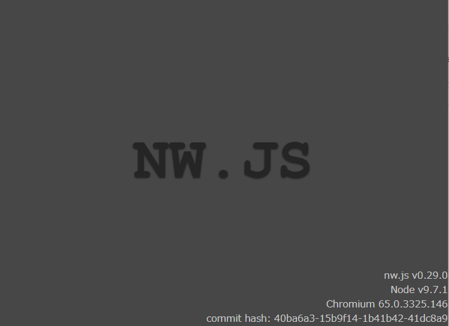

<!DOCTYPE HTML>
<html>
<head><meta name="generator" content="Hexo 3.9.0">
  <meta charset="utf-8">
  
  <title>RPGツクールMV Game.exeがpackage.nwをちゃんと読んでくれなかった話 | ぷらずま式改</title>
  <meta name="author" content="NPlasma">

  
  <meta name="description" content="NPlasmaの個人メモ">
  

  

  <meta name="viewport" content="width=device-width, initial-scale=1, maximum-scale=1">

  <meta property="og:title" content="RPGツクールMV Game.exeがpackage.nwをちゃんと読んでくれなかった話">
  <meta property="og:site_name" content="ぷらずま式改">

  
  

  
    <meta property="og:image" content="/img/ogp.png">
  

  <!-- ogp -->
  
    
      <meta name="description" content="RPGツクールMVのデプロイメントで出力されたファイルを、NWjs公式で紹介されている方法でパッキングできます。1わたしも依頼した楽曲を含めて配布することになったため、そろそろこの手法をやっておこうかなと思って挑戦した2ところ、Game.exe（nw.exe）の画面がnw_blank.htmlになってしまいました。 一晩これで眠れなかったので、とりあえず納得のいく説を書いておきます。">
<meta name="keywords" content="情報技術,RPGツクールMV,NWjs">
<meta property="og:type" content="article">
<meta property="og:title" content="RPGツクールMV Game.exeがpackage.nwをちゃんと読んでくれなかった話">
<meta property="og:url" content="http://elleonard.github.io/nplus_doc/2020/05/01/engineering/rmmv/why-game-exe-doesnt-work-with-package-nw/index.html">
<meta property="og:site_name" content="ぷらずま式改">
<meta property="og:description" content="RPGツクールMVのデプロイメントで出力されたファイルを、NWjs公式で紹介されている方法でパッキングできます。1わたしも依頼した楽曲を含めて配布することになったため、そろそろこの手法をやっておこうかなと思って挑戦した2ところ、Game.exe（nw.exe）の画面がnw_blank.htmlになってしまいました。 一晩これで眠れなかったので、とりあえず納得のいく説を書いておきます。">
<meta property="og:locale" content="ja">
<meta property="og:image" content="http://elleonard.github.io/nplus_doc/2020/05/01/engineering/rmmv/why-game-exe-doesnt-work-with-package-nw/nwjs.png">
<meta property="og:updated_time" content="2020-05-02T04:35:31.357Z">
<meta name="twitter:card" content="summary">
<meta name="twitter:title" content="RPGツクールMV Game.exeがpackage.nwをちゃんと読んでくれなかった話">
<meta name="twitter:description" content="RPGツクールMVのデプロイメントで出力されたファイルを、NWjs公式で紹介されている方法でパッキングできます。1わたしも依頼した楽曲を含めて配布することになったため、そろそろこの手法をやっておこうかなと思って挑戦した2ところ、Game.exe（nw.exe）の画面がnw_blank.htmlになってしまいました。 一晩これで眠れなかったので、とりあえず納得のいく説を書いておきます。">
<meta name="twitter:image" content="http://elleonard.github.io/nplus_doc/2020/05/01/engineering/rmmv/why-game-exe-doesnt-work-with-package-nw/nwjs.png">
<meta name="twitter:creator" content="@elleonard_f">
    
    <meta name="twitter:image" content="http://elleonard.github.io/nplus_doc/img/ogp.png">
  

  <link rel="alternate" href="/nplus_doc/atom.xml" title="ぷらずま式改" type="application/atom+xml">
  <link rel="stylesheet" href="/nplus_doc/css/style.css" media="screen" type="text/css">
  <!--[if lt IE 9]><script src="//html5shiv.googlecode.com/svn/trunk/html5.js"></script><![endif]-->
  


  <link rel="apple-touch-icon" sizes="180x180" href="/nplus_doc/favicon/apple-touch-icon.png">
  <link rel="icon" type="image/png" sizes="32x32" href="/nplus_doc//favicon/favicon-32x32.png">
  <link rel="icon" type="image/png" sizes="16x16" href="/nplus_doc//favicon/favicon-16x16.png">
  <link rel="manifest" href="/nplus_doc//favicon/site.webmanifest">
  <link rel="mask-icon" href="/nplus_doc//favicon/safari-pinned-tab.svg" color="#5bbad5">
  <meta name="msapplication-TileColor" content="#da532c">
  <meta name="theme-color" content="#ffffff">
</head>
</html>

<body>
  <header id="header" class="inner"><div class="alignleft">
  <h1><a href="/nplus_doc/">ぷらずま式改</a></h1>
  <h2><a href="/nplus_doc/">NPlasma個人メモ</a></h2>
</div>
<nav id="main-nav" class="alignright">
  <ul>
    
      <li><a href="/">Home</a></li>
    
      <li><a href="/nplus_doc/2016/05/29/about/">About</a></li>
    
      <li><a href="https://twitter.com/elleonard_f">Twitter</a></li>
    
      <li><a href="https://github.com/elleonard">GitHub</a></li>
    
      <li><a href="/nplus_doc/2018/02/09/game/fate/fgo/fgo-link/">FGO</a></li>
    
  </ul>
  <div class="clearfix"></div>
</nav>
<div class="clearfix"></div></header>
  <div id="content" class="inner">
    <div id="main-col" class="alignleft"><div id="wrapper"><article class="post">
  
  <div class="post-content">
    <header>
      
        <div class="icon"></div>
        <time datetime="2020-05-01T09:30:25.000Z"><a href="/nplus_doc/2020/05/01/engineering/rmmv/why-game-exe-doesnt-work-with-package-nw/">2020-05-01</a></time>
      
      
  
    <h1 class="title">RPGツクールMV Game.exeがpackage.nwをちゃんと読んでくれなかった話</h1>
  

    </header>
    <div class="entry">
      
        <div id="toc" class="toc-article">
          <p class="toc-title">目次</p>
          <ol class="toc"><li class="toc-item toc-level-1"><a class="toc-link" href="#詳細な手順と症状"><span class="toc-text">詳細な手順と症状</span></a></li><li class="toc-item toc-level-1"><a class="toc-link" href="#試行錯誤"><span class="toc-text">試行錯誤</span></a><ol class="toc-child"><li class="toc-item toc-level-2"><a class="toc-link" href="#ググる"><span class="toc-text">ググる</span></a></li><li class="toc-item toc-level-2"><a class="toc-link" href="#NWjs-を最新版にしてみる"><span class="toc-text">NWjs を最新版にしてみる</span></a></li><li class="toc-item toc-level-2"><a class="toc-link" href="#package-json-だけ置いてみる"><span class="toc-text">package.json だけ置いてみる</span></a></li><li class="toc-item toc-level-2"><a class="toc-link" href="#package-nw-ディレクトリを置いてみる"><span class="toc-text">package.nw ディレクトリを置いてみる</span></a></li><li class="toc-item toc-level-2"><a class="toc-link" href="#nw-builder-を使ってみる"><span class="toc-text">nw-builder を使ってみる</span></a></li><li class="toc-item toc-level-2"><a class="toc-link" href="#nw-builder-のソースコードを読む"><span class="toc-text">nw-builder のソースコードを読む</span></a></li><li class="toc-item toc-level-2"><a class="toc-link" href="#ZipInfoを見比べる"><span class="toc-text">ZipInfoを見比べる</span></a></li></ol></li></ol>
        </div>
        <p>RPGツクールMVのデプロイメントで出力されたファイルを、NWjs公式で紹介されている方法でパッキングできます。<sup class="footnote-ref"><a href="#fn1" id="fnref1" title="セアロソンク作品サポートブログ : 【ツクールMV】ENIGMA VIRTUAL BOXを使わずにファイルを隠蔽する方法参照。">1</a></sup><br>わたしも依頼した楽曲を含めて配布することになったため、そろそろこの手法をやっておこうかなと思って挑戦した<sup class="footnote-ref"><a href="#fn2" id="fnref2" title="ただし、zipを使った方法ではnwjsが一時ディレクトリに中身を全展開するのでリソースが丸見えになるのでファイル隠匿の効果がまったくない。">2</a></sup>ところ、Game.exe（nw.exe）の画面がnw_blank.htmlになってしまいました。</p>
<p>一晩これで眠れなかったので、とりあえず納得のいく説を書いておきます。</p>
<a id="more"></a>

<h1 id="詳細な手順と症状"><a href="#詳細な手順と症状" class="headerlink" title="詳細な手順と症状"></a>詳細な手順と症状</h1><ol>
<li>まず、RPGツクールMVのデプロイメントでプロジェクトをデプロイします。</li>
<li>デプロイ先のwwwディレクトリとpackage.jsonを.zipに圧縮します。</li>
<li>圧縮した.zipファイルをpackage.nwにリネームします。</li>
<li>wwwディレクトリとpackage.jsonを削除し、Game.exe（あるいは、nw.exe）を起動します。</li>
<li>ご覧の有様だよ！！</li>
</ol>
<p></p>
<p>本来であればゲームが起動してほしいところ、開いたウィンドウはこのメタリックな画面のまま動きません。</p>
<h1 id="試行錯誤"><a href="#試行錯誤" class="headerlink" title="試行錯誤"></a>試行錯誤</h1><h2 id="ググる"><a href="#ググる" class="headerlink" title="ググる"></a>ググる</h2><p>まずは添加のグーグル先生に聞いてみましょう。 Google is your friend.<br>すると、<a href="https://forums.rpgmakerweb.com/index.php?threads/rmmv-pro-tips-how-to-compress-your-ressource-one-files-exectuable.96879/page-2" target="_blank" rel="noopener">全く同じ症状で苦しんでいるポスト</a>が海外のフォーラムにありました。</p>
<p>しかし、解決はしていないようです。</p>
<h2 id="NWjs-を最新版にしてみる"><a href="#NWjs-を最新版にしてみる" class="headerlink" title="NWjs を最新版にしてみる"></a>NWjs を最新版にしてみる</h2><p>2020/05/01現在最新の0.45.0にして、上記手順のGame.exeや.dll周りを差し替えて試してみました。<br>結果は同じくメタリックさん。変わりません。</p>
<h2 id="package-json-だけ置いてみる"><a href="#package-json-だけ置いてみる" class="headerlink" title="package.json だけ置いてみる"></a>package.json だけ置いてみる</h2><p>package.jsonだけ削除せずにGame.exeを起動してみました。<br>すると、対象が見つかりませんエラー。index.htmlが見えていない（つまり、package.nwの中身が見えていない）ということで間違いなさそうです。</p>
<h2 id="package-nw-ディレクトリを置いてみる"><a href="#package-nw-ディレクトリを置いてみる" class="headerlink" title="package.nw ディレクトリを置いてみる"></a>package.nw ディレクトリを置いてみる</h2><p>実は<a href="http://docs.nwjs.io/en/latest/For%20Users/Package%20and%20Distribute/#package-option-1-plain-files-recommended" target="_blank" rel="noopener">NWjsの公式ドキュメント</a>にはこの方法が推奨されると書かれています。<br>package.nw というzipファイルではなく、ディレクトリを用意して、package.jsonとwwwディレクトリをその中に放り込んで試してみました。</p>
<p>無事にゲームが起動しました。</p>
<p>こうなると、package.nwを作る方法（すなわち、.zip圧縮の方法）が疑わしい、ということがわかります。</p>
<h2 id="nw-builder-を使ってみる"><a href="#nw-builder-を使ってみる" class="headerlink" title="nw-builder を使ってみる"></a>nw-builder を使ってみる</h2><p><a href="https://github.com/nwjs-community/nw-builder" target="_blank" rel="noopener">nw-builder</a> は、NWjsのプロジェクトを.exeにパッキングしてくれるプログラムです。<br>以下のようにして簡単に使用できます。</p>
<figure class="highlight bash"><table><tr><td class="code"><pre><span class="line">npm install nw-builder -g</span><br><span class="line">nwbuild -v latest -p win64 （プロジェクトディレクトリへのパス）</span><br></pre></td></tr></table></figure>

<p>これによって出力されたディレクトリの中身をNWjsの最新版ディレクトリに放り込んで、.exeを起動すると、無事にゲームが開始されます。<br>nwbuild の実行中、コンソールには <code>Zipping （ファイル名）</code> などと表示されていたので、内部でzip圧縮処理を行っているのでしょう。</p>
<h2 id="nw-builder-のソースコードを読む"><a href="#nw-builder-のソースコードを読む" class="headerlink" title="nw-builder のソースコードを読む"></a>nw-builder のソースコードを読む</h2><p>つまり、 nw-builder と同じ方法でzip圧縮すれば、起動のために必要な package.nw が得られるのでは、と考えてやってみました。<br><a href="https://gist.github.com/elleonard/e4453a423eaedbc44858a8bef5d07194" target="_blank" rel="noopener">generateZip.js</a></p>
<p>nw-builderのソースコードを読んで、zip圧縮している箇所だけ単体で実行できるように雑に書いたjsです。<br>archiver と simple-glob に依存しているので、それらをインストールしてから実行します。</p>
<figure class="highlight bash"><table><tr><td class="code"><pre><span class="line">npm install archiver -g</span><br><span class="line">npm install simple-glob -g</span><br><span class="line">node ./generateZip.js</span><br></pre></td></tr></table></figure>

<p>このプログラムによって生成した package.nw を使って実行したところ、ゲームが無事に起動しました。<sup class="footnote-ref"><a href="#fn3" id="fnref3" title="しかも、nw-builderと違って必要なファイルのみ圧縮しているので、容量もそこそこ削減できた。">3</a></sup><br>つまり、zipの作り方が何かしら間違っていた可能性があります。</p>
<h2 id="ZipInfoを見比べる"><a href="#ZipInfoを見比べる" class="headerlink" title="ZipInfoを見比べる"></a>ZipInfoを見比べる</h2><p>では、起動に成功する良いzipと、メタリックな画面のお友達な悪いzipの中身、どう違うのでしょうか。<br>答えはZipInfoで両者の中身を見た時になんとなく想像できました。</p>
<ul>
<li>permissionの表示が異なる（ <code>-rw-rw-rw-</code> と <code>-rw-a--</code> ）</li>
<li>作成環境が異なる（ <code>unx</code> と <code>fat</code> ）</li>
<li>ディレクトリそのものが構成の中に記されているかどうか（悪いzipはディレクトリそのものが記されていた）</li>
<li>ファイル名のマルチバイト文字が化けているかどうか（悪いzipは化けている）</li>
</ul>
<p>この中で、最も怪しいのはマルチバイト文字です。<br>なぜかと言うと、海外のポストで苦しんでいた人物がブラジルの人だから。<sup class="footnote-ref"><a href="#fn4" id="fnref4" title="ブラジルの公用語はポルトガル語。セディーユ等の特殊なマルチバイト文字が含まれる。">4</a></sup></p>
<p>とは言え、ローカルでこれの検証をするだけの元気は残っていませんでした。<br>誰か暇な人がいれば、検証してみてください。</p>
  <hr class="footnotes-sep">
  <section class="footnotes">
  <ol class="footnotes-list">
  <li id="fn1" class="footnote-item"><a href="http://b.dlsite.net/RG26890/archives/16263650.html" target="_blank" rel="noopener">セアロソンク作品サポートブログ : 【ツクールMV】ENIGMA VIRTUAL BOXを使わずにファイルを隠蔽する方法</a>参照。<a href="#fnref1"> <span class="up-arrow"></span></a></li>
<li id="fn2" class="footnote-item">ただし、zipを使った方法ではnwjsが一時ディレクトリに中身を全展開するのでリソースが丸見えになるのでファイル隠匿の効果がまったくない。<a href="#fnref2"> <span class="up-arrow"></span></a></li>
<li id="fn3" class="footnote-item">しかも、nw-builderと違って必要なファイルのみ圧縮しているので、容量もそこそこ削減できた。<a href="#fnref3"> <span class="up-arrow"></span></a></li>
<li id="fn4" class="footnote-item">ブラジルの公用語はポルトガル語。セディーユ等の特殊なマルチバイト文字が含まれる。<a href="#fnref4"> <span class="up-arrow"></span></a></li>
  </ol>
  </section>

      
    </div>
    
    <footer>
        <div class="alignright">
            <a href="https://twitter.com/share?ref_src=twsrc%5Etfw" class="twitter-share-button" data-text="RPGツクールMV Game.exeがpackage.nwをちゃんと読んでくれなかった話 | ぷらずま式改" data-url="http://elleonard.github.io/nplus_doc/2020/05/01/engineering/rmmv/why-game-exe-doesnt-work-with-package-nw/" data-via="elleonard_f" data-show-count="false">Tweet</a><script async src="https://platform.twitter.com/widgets.js" charset="utf-8"></script>
        </div>
        
  
  <div class="categories">
    <a href="/nplus_doc/categories/ゲーム制作/">ゲーム制作</a>
  </div>

        
  
  <div class="tags">
    <a href="/nplus_doc/tags/情報技術/">情報技術</a>, <a href="/nplus_doc/tags/RPGツクールMV/">RPGツクールMV</a>, <a href="/nplus_doc/tags/NWjs/">NWjs</a>
  </div>

        
        
          <div class="article-next">
            <a href="/nplus_doc/2020/03/30/game/atelier/rorona-dx/">【ゲーム感想】ロロナのアトリエ ～アーランドの錬金術士～ DX <span class="next-arrow"/></a>
          </div>
        
        <!-- partial('post/share') -->
      <div class="clearfix"></div>
    </footer>
  </div>
</article>


</div></div>
    <aside id="sidebar" class="alignright">
  <div class="search">
  <form action="//google.com/search" method="get" accept-charset="utf-8">
    <input type="search" name="q" results="0" placeholder="検索">
    <input type="hidden" name="q" value="site:elleonard.github.io/nplus_doc">
  </form>
</div>

  
<div class="widget tag">
  <h3 class="title">カテゴリ</h3>
  <ul class="entry">
  
    <li><a href="/nplus_doc/categories/FGO/">FGO</a><small>47</small></li>
  
    <li><a href="/nplus_doc/categories/niconico/">niconico</a><small>3</small></li>
  
    <li><a href="/nplus_doc/categories/アニメ感想/">アニメ感想</a><small>10</small></li>
  
    <li><a href="/nplus_doc/categories/ゲーム/">ゲーム</a><small>48</small></li>
  
    <li><a href="/nplus_doc/categories/ゲーム/ゲームレビュー/">ゲームレビュー</a><small>37</small></li>
  
    <li><a href="/nplus_doc/categories/ゲーム制作/">ゲーム制作</a><small>9</small></li>
  
    <li><a href="/nplus_doc/categories/遊戯王ブロンティーズ/デッキレシピ/">デッキレシピ</a><small>4</small></li>
  
    <li><a href="/nplus_doc/categories/小説/">小説</a><small>4</small></li>
  
    <li><a href="/nplus_doc/categories/情報技術/">情報技術</a><small>11</small></li>
  
    <li><a href="/nplus_doc/categories/漫画/">漫画</a><small>2</small></li>
  
    <li><a href="/nplus_doc/categories/百合/">百合</a><small>6</small></li>
  
    <li><a href="/nplus_doc/categories/艦これ/">艦これ</a><small>76</small></li>
  
    <li><a href="/nplus_doc/categories/遊戯王ブロンティーズ/">遊戯王ブロンティーズ</a><small>4</small></li>
  
    <li><a href="/nplus_doc/categories/雑記/">雑記</a><small>4</small></li>
  
  </ul>
</div>


  
<div class="widget tag">
  <h3 class="title">最近の投稿</h3>
  <ul class="entry">
    
      <li>
        <a href="/nplus_doc/2020/05/01/engineering/rmmv/why-game-exe-doesnt-work-with-package-nw/">RPGツクールMV Game.exeがpackage.nwをちゃんと読んでくれなかった話</a>
      </li>
    
      <li>
        <a href="/nplus_doc/2020/03/30/game/atelier/rorona-dx/">【ゲーム感想】ロロナのアトリエ ～アーランドの錬金術士～ DX</a>
      </li>
    
      <li>
        <a href="/nplus_doc/2020/03/13/anime/girls-und-panzer/">【アニメ感想】ガールズ＆パンツァー TVシリーズ アンツィオ戦 劇場版</a>
      </li>
    
      <li>
        <a href="/nplus_doc/2020/03/07/engineering/rmmv/good-plugin2/">RPGツクールMV 続・良いプラグインとは</a>
      </li>
    
      <li>
        <a href="/nplus_doc/2020/02/21/novel/dear-all-of-you/">【ラノベ感想】じんるいのみなさまへ -わたしたちの場所-</a>
      </li>
    
  </ul>
</div>


  
<div class="widget tag">
  <h3 class="title">Link</h3>
  <ul class="entry">
    
      <li>
        <a href="https://www.nicovideo.jp/">niconico</a>
      </li>
    
      <li>
        <a href="http://lovingtheflags1986.blog96.fc2.com/">国旗と酒が待ち遠しいドリル日記</a>
      </li>
    
  </ul>
</div>


</aside>
    
    <div class="clearfix"></div>
  </div>
  <footer id="footer" class="inner"><div class="alignleft">
  <p>
  
  &copy; 2020 NPlasma
  
  All rights reserved.</p>
  <p>Powered by <a href="http://hexo.io/" target="_blank">Hexo</a></p>
</div>
<div class="clearfix"></div>
</footer>
  <script src="/nplus_doc/js/jquery.imagesloaded.min.js"></script>
<script src="/nplus_doc/js/gallery.js"></script>


<link rel="stylesheet" href="/nplus_doc/fancybox/jquery.fancybox.css" media="screen" type="text/css">
<script src="/nplus_doc/fancybox/jquery.fancybox.pack.js"></script>
<script type="text/javascript">
(function($){
  $('.fancybox').fancybox();
})(jQuery);
</script>


<div id='bg'></div>
</body>
</html>
